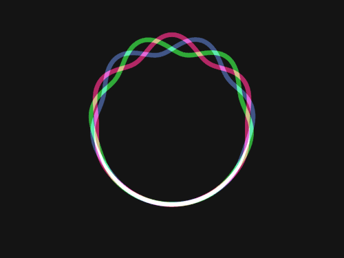

Baik file gambar dengan format gif maupun jpg dapat digunakan sebagai latar belakang HTML.
Bila gambar yang digunakan lebih kecil dari halaman situs , gambar akan ditampilkan berulang-ulang.
Sebuah gambar dari folder lokal :
Sebuah gambar dari folder lain: 
Mengambil gambar dari situs lain:
Sebuah gambar diantara teks